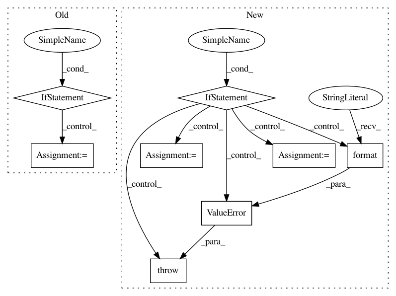

baa053496a78bbb89279847277e49242f721af0e,rllib/tests/run_regression_tests.py,,,#,27
Before Change
if __name__ == "__main__":
// Bazel regression test mode: Get path to look for yaml files from argv[2].
if sys.argv[1] == "BAZEL":
// Get the path to use.
rllib_dir = Path(__file__).parent.parent
print("rllib dir={}".format(rllib_dir))
yaml_files = rllib_dir.rglob(sys.argv[2] + "/*.yaml")
yaml_files = sorted(
map(lambda path: str(path.absolute()), yaml_files), reverse=True)
// Normal mode: Get yaml files to run from command line.
else:
yaml_files = sys.argv[1:]
print("Will run the following regression files:")
for yaml_file in yaml_files:
print("->", yaml_file)
After Change
rllib_dir = Path(__file__).parent.parent
print("rllib dir={}".format(rllib_dir))
if not os.path.isdir(os.path.join(rllib_dir, args.yaml_dir)):
raise ValueError("yaml-dir ({}) not found!".format(args.yaml_dir))
yaml_files = rllib_dir.rglob(args.yaml_dir + "/*.yaml")
yaml_files = sorted(
map(lambda path: str(path.absolute()), yaml_files), reverse=True)
print("Will run the following regression tests:")
for yaml_file in yaml_files:
print("->", yaml_file)
// Loop through all collected files.
for yaml_file in yaml_files:
experiments = yaml.load(open(yaml_file).read())
assert len(experiments) == 1,\
"Error, can only run a single experiment per yaml file!"
print("== Test config ==")
print(yaml.dump(experiments))
// Add torch option to exp configs.
for exp in experiments.values():
if args.torch:
exp["config"]["use_pytorch"] = True
// Try running each test 3 times and make sure it reaches the given
// reward.
passed = False
In pattern: SUPERPATTERN
Frequency: 4
Non-data size: 8
Instances
Project Name: ray-project/ray
Commit Name: baa053496a78bbb89279847277e49242f721af0e
Time: 2020-05-26
Author: sven@anyscale.io
File Name: rllib/tests/run_regression_tests.py
Class Name:
Method Name:
Project Name: keras-team/keras
Commit Name: c3eb62763fcc5029c26b025ba1b60d7788d491a1
Time: 2019-03-30
Author: andhus@kth.se
File Name: keras/engine/saving.py
Class Name:
Method Name: save_model
Project Name: NifTK/NiftyNet
Commit Name: 3ec1dac0608e511d4cf28e93a3fb908bbabceac5
Time: 2017-04-26
Author: z.eaton-rosen@ucl.ac.uk
File Name: nn/loss.py
Class Name: LossFunction
Method Name: set_loss_type
Project Name: keras-team/keras
Commit Name: 5a8f346e64cb432a445002230246ee042dbc278b
Time: 2018-11-05
Author: andhus@kth.se
File Name: keras/backend/theano_backend.py
Class Name:
Method Name: rnn